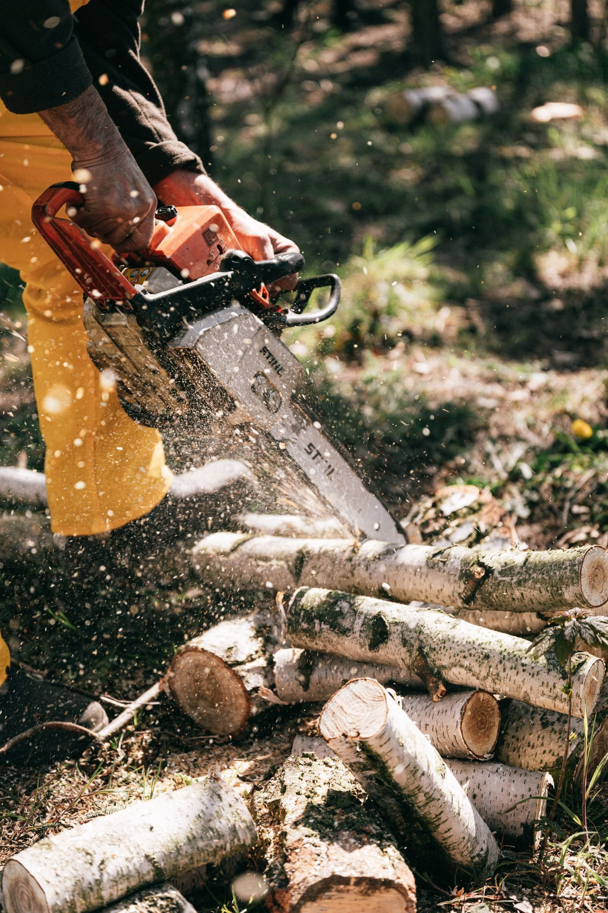

Sherwood, Arkansas
Trees down safely, roofs done right
JLM Tree Servicing and Roofing is a tree service and roofing company in Sherwood. Call to ask about tree removal and trimming, stump grinding, roofing, fences, decks, or finish carpentry.

Sherwood, Arkansas
JLM Tree Servicing and Roofing is a tree service and roofing company in Sherwood. Call to ask about tree removal and trimming, stump grinding, roofing, fences, decks, or finish carpentry.
JLM Tree Servicing and Roofing is a tree service and roofing company in Sherwood. Its services include tree removal and trimming, stump grinding, residential and commercial roofing in metal, cedar shake, and shingle, ceramic tile work, fences, decks, and finish (trim) carpentry. The own site is a service list plus FAQs with no prices and no online booking, so call with questions.


3212 Seminole Trl, Sherwood, AR
Daily 7:00 AM to 10:00 PM